Задание имеет несколько прототипов (я насчитал 4), один из которых (с числовыми отрезками) быстрее решать руками, нежели кодом. Остальные 3 прототипа довольно легко прогаются.
Критически важно знать логические законы для прототипа, который решается руками. Вам может показаться, что последний прототип - это задание из разряда “иди нахуй”, но, уверяю вас, это не так. Стоит порешать их штучек 10-15 и все, вы станете неотразимы.
Пример 1)
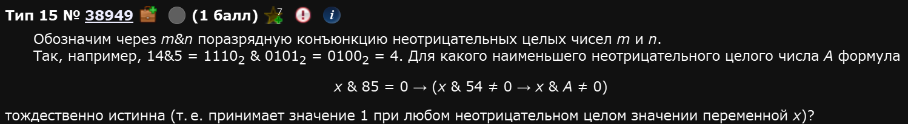
Итак, задание решается перебором (эксплуатируем скорость вычисления машин на полную). Идея такая: мы переберем произвольное кол-во A от 0 до n (где n выбирается методом тыка), для каждого значения А мы прогоним n циклов со значениями x и если хоть в одном из них окажется, что функция ложна - это значения А не подходит.
Начнем с написания функции, которая задана в условии. Ее можно написать по-разному, можно перефразировать итд. Я, для наглядности, буду писать ее в первозданном виде, как она описана в условии:
def f(x,A):
if (x & 85 == 0) <= ((x & 54 != 0) <= (x & A != 0)): #Вот это и есть функция
return True
else:
return FalseОбратите внимание:
- Побитовая конъюнкция уже закреплена в питоне и обозначается как &.
- Импликация или следование имеет обозначение <= (легко проверить, что это так, их таблицы истинности совпадают).
| X | Y | F () |
|---|---|---|
| 0 | 0 | 1 |
| 0 | 1 | 1 |
| 1 | 0 | 0 |
| 1 | 1 | 1 |
| X | Y | F (<=) |
|---|---|---|
| 0 | 0 | 1 |
| 0 | 1 | 1 |
| 1 | 0 | 0 |
| 1 | 1 | 1 |
- Нам не нужно ставить какое-то итоговое числовое значение функции, мы просто ретерним истину либо ложь в зависимости от того выполняется ли условие.
А далее мы должны для каждого А чекнуть все-все-все х из определенного диапазона. Диапазон выбирается наугад, может быть больше или меньше (при вашем желании его можно менять, зависит от условия).
for A in range (300):
flag = True
for x in range (300):
if not(f(x,A)):
flag = False
if flag:
print(A)Соединяем:
def f(x,A):
if (x & 85 == 0) <= ((x & 54 != 0) <= (x & A != 0)):
return True
else:
return False
for A in range (300):
flag = True
for x in range (300):
if not(f(x,A)):
flag = False
if flag:
print(A)Что круто: в таких заданиях вторая часть с циклами остается неизменной от задания к заданию. Т.е. вам нужно менять только саму функцию. Программка выдаст список чисел, которые удовлетворяют условию. Нам нужно наименьшее.
Ответ: 34
Сильно назад время отматывать не надо. Задание под номером 15 в ЕГЭ по информатике достаточно сильно изменилось начиная с 2022-2023 годов.
Пример 2)
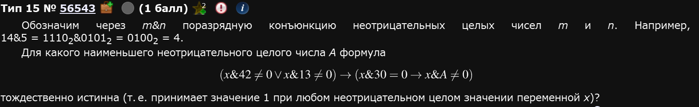
Собсна, все то же самое, только функция другая. Обратите внимание на расставленные скобки. Они нужны здесь для того, чтобы верно расставить приоритеты выполнения операций.
def f(x,A):
if ((x & 42 != 0) or (x & 13 != 0)) <= ((x & 30 == 0) <= (x & A != 0)):
return True
else:
return False
for A in range (300):
flag = True
for x in range (300):
if not(f(x,A)):
flag = False
if flag:
print(A)Нужно наименьшее. Берем 33.
Ответ: 33.
Закрепляющая для этого прототипа:
Пример 3)
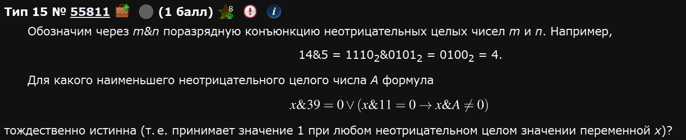
Как и говорилось ранее, от предыдущих отличается лишь функцией:
def f(x,A):
if (x & 39 == 0) or ((x & 11 == 0) <= (x & A != 0)):
return True
else:
return False
for A in range (300):
flag = True
for x in range (300):
if not(f(x,A)):
flag = False
if flag:
print(A)Ответ: 39.
Рассмотрим другой прототип этого задания:
Пример 4)
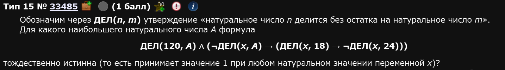
Несмотря на то, что формулировка немного отличается, с формальной точки зрения, ничего не поменялось. Мы все также должны указать правильное логическое условие в нашей функции и все также перебирать значения x и А. Единственное отличие - диапазон стоит взять побольше.
def f(x,A):
if (120 % A == 0) and ((x % A != 0) <= ((x % 18 == 0) <= (x % 24 != 0))):
return True
else:
return False
for A in range (1,1000):
flag = True
for x in range (1,1000):
if not(f(x,A)):
flag = False
if flag:
print(A)Обратите внимание: каждое действие с ДЕЛ заключено в скобки. Это связано с тем, что без них питон ставит первый приоритет не тем операциям, который нам нужны. В частности, если убрать скобки из-под операции x % A != 0 программа ничего не выдаст. Будьте внимательны и аккуратны (подробный порядок операций распишу позже; Если вы его не увидите до конца разбора этого номера - разбудите автора, мб он просто устал и уснул).
Пример 5)
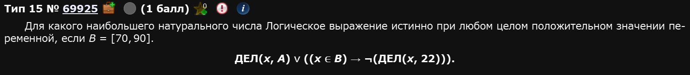
Не стоит пугаться новой для нас операции - включения т.е. проверки на то, что х принадлежит отрезку В. Нам придется отдельно задать этот отрезок в качестве списка и чекать напрямую состоит ли х в В командой x in B. В остальном решение то же самое.
b = list(range(70,91)) #Задаем отрезок
def f(x,A):
if ((x % A == 0) or ((x in b) <= (x % 22 != 0))):
return True
else:
return False
for A in range (1,1000):
flag = True
for x in range (1,1000):
if not(f(x,A)):
flag = False
if flag:
print(A)Этот прототип также не отличается оригинальностью,,,
Пример 6)
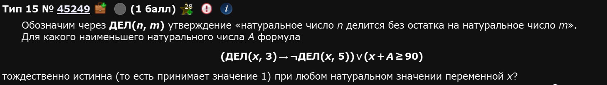
def f(x,A):
if ((x % 3 == 0) <= (x % 5 != 0)) or (x + A >= 90):
return True
else:
return False
for A in range (1,300):
flag = True
for x in range (1,300):
if not(f(x,A)):
flag = False
if flag:
print(A)Ответ: 75
Разберем третий прототип: когда даны x и y.
Пример 7)
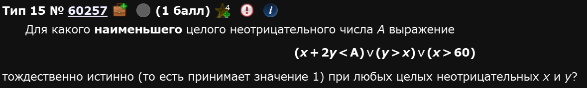
Все что меняется - так это то, что нам придется прогонять еще одну переменную - переменную y, причем в том же месте, что и переменную x. Само собой, теперь наша f(x,A) превратиться в f(x,y,A).
def f(x,y,A):
if ((x + 2 * y < A) or (y > x) or (x > 60)):
return True
else:
return False
for A in range (1,300):
flag = True
for x in range (1,300):
for y in range (1,300):
if not(f(x,y,A)):
flag = False
if flag:
print(A)Кста, если ваш комп (почему-то) не вывозит операций можно уменьшить range, ведь нас интересует именно наименьшее возможное.
Ответ: 181
Пример 8)
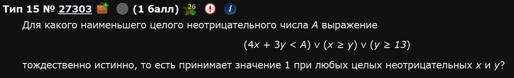
Ровно ничем не отличается от предыдущего, разве что функция другая:
def f(x,y,A):
if (4 * x + 3 * y < A) or (x >= y) or (y >= 13):
return True
else:
return False
for A in range (1,300):
flag = True
for x in range (1,300):
for y in range (1,300):
if not(f(x,y,A)):
flag = False
if flag:
print(A)Пример 9)
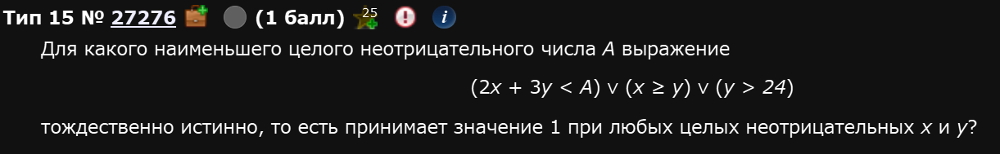
def f(x,y,A):
if (2 * x + 3 * y < A) or (x >= y) or (y > 24):
return True
else:
return False
for A in range (1,300):
flag = True
for x in range (1,300):
for y in range (1,300):
if not(f(x,y,A)):
flag = False
if flag:
print(A)Наконец, рассмотрим прототип задания, который решается ручками. В целом, последний прототип можно запрогать, однако тут надо быть максимально аккуратным, знать особенности работы циклов и нигде не объебаться, что, конкретно в этом прототипе, будет довольно сложно. Вариант запрогать оставляю на самостоятельность (впадлу).
Пример 10)
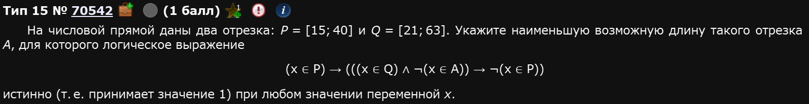
Собсна, для того, чтобы решить это задание нам нужно как-то упростить логическую функцию, которую мы видим. Делается это с помощью законов логики. Вот все, которые нужны для решения подобных заданий (чисто для того, чтобы проще было писать - конъюнкция это умножение т.е. , а дизъюнкция - это ):
| Название | Для конъюнкции | Для дизъюнкции |
|---|---|---|
| Закон повторения (идемпотенции) | ||
| Третьего не дано | ||
| Поглощение | ||
| Коммутативность (переместительный) | ||
| Ассоциативность (сочетательный) | ||
| Дистрибутивность (распределительный) | ||
| Закон двойного отрицания | (это не значит, что этот закон работает только для конъюнкции, он универсален) | - |
| Закон де Моргана | (тут имеется ввиду, что знак отрицания слева стоит над всем выражением, я прост хз эту палочку растянуть) | (опять же, отрицается полное выражение слева) |
| Импликация | - | |
| Эквивалентность | (стрелочка влево и вправо - это эквивалентность, иногда обозначается как тройное равно ”≡”) | - |
| XOR или исключающее или или антиэквивалентность | (иногда обозначают как перечеркнутая эквивалентность) |
Итак, перепишем это выражение и будем последовательно его преобразовывать:
Чтобы было проще работать, давайте введем обозначения: ; ; . Перепишем выражение, используя новые обозначения:
Раскроем внешнюю импликацию:
Раскроем внутреннюю импликацию (ту, которая в скобках):
Для скобки воспользуемся законом де Моргана:
Двойное отрицание А даст просто А:
Скобки с можно опустить:
Опускаем скобки и применяем закон повторения для :
Вуаля, мы получили адекватное выражение.
Теперь, вспоминаем, что отрезок , а отрезок . Стоит нарисовать числовую прямую для наглядности:
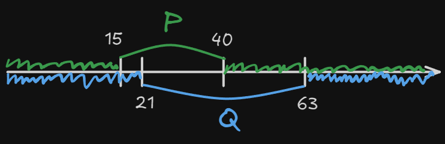
Это я уже сразу нарисовал нужные интервалы (х не принадлежит Р и х не принадлежит Q).
По сути, нам надо дозакрыть числовую прямую так, чтобы какой бы ни был х он бы попал в один из этих трех промежутков (либо А, либо не Р, либо не Q). По рисунку видно, что нам нужен вот такой отрезок:
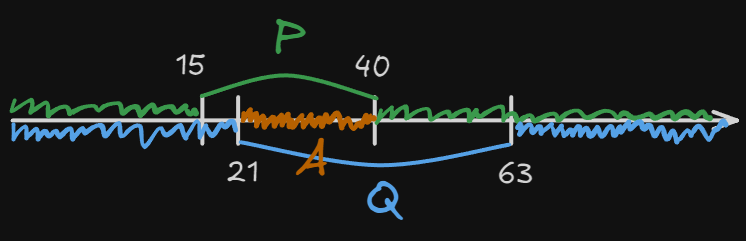
Длина этого отрезка и есть наш ответ. Найти его длину довольно просто: .
Ответ: 19
Пример 11)
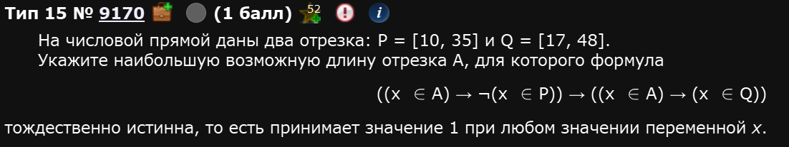
Введем обозначения: ; ; и преобразуем выражение:
Воспользуемся дистрибутивным законом для дизъюнкции:
Изобразим это на числовой прямой:
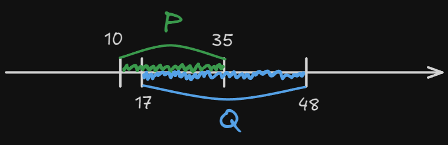
Теперь ситуация такая: вне зависимости от того че там с А, попадает туда х или нет, он лярд проц должен попадать либо в Р либо в Q т.е. в отрезок с 10 до 48, а т.к. нас просят указать именно максимальную длину отрезка А, то она равна .
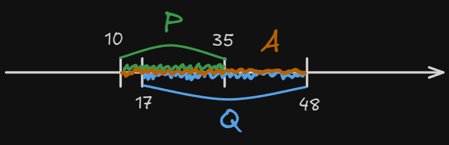
Ответ: 38
Пример 12)
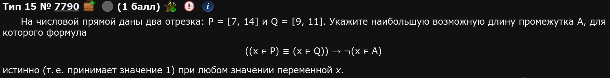
Обозначения: ; ; .
В данном случае лучше на этом остановиться. Исключающее или работает так: оно включает все, кроме пересечения множеств:
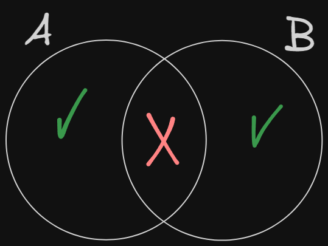
Нарисуем числовую прямую и отметим на ней наши Р и Q:
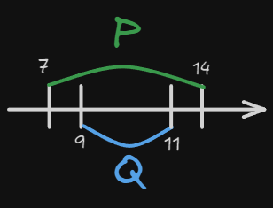
И изобразим подходящие А:
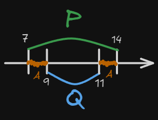
Просят наибольший. Из этих двух наибольший имеет длину
Ответ: 3
Решение 4ого прототипа кодом
В чем проблема решения 4ого прототипа 15ого номера кодом? В том, что подходов много и все они в относительно равной степени правдивы. Универсальность остается под вопросом в случае отдельных представителей 15ого номера.
Однако, я все равно расскажу.
Первый способ
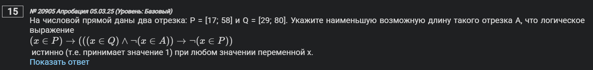
def f(x):
P = 17 <= x <= 58
Q = 29 <= x <= 80
A = a1 <= x <= a2
return P <= ((Q and (not A)) <= (not P ))
r = []
d = [y for x in (17, 29, 58, 80) for y in (x, x - 0.1, x + 0.1)]
for a1 in d:
for a2 in d:
if all(f(x) == 1 for x in d) and a2 >= a1: # а2 >= f1 чтобы не получился переврнутый отрезок
r += [a2 - a1]
print(round(min(r)))Идея такая: мы формируем нашу логическую функцию как функцию в python, перебираем значения из наших множеств и если так станется, что f(x) == 1 for x in d - это будет истинной всегда, тогда мы нашли наш отрезок А.
Самая мутная строка здесь - это d = [y for x in (17, 29, 58, 80) for y in (x, x - 0.1, x + 0.1)]. Из плюсов - она шаблонная. Из минусов: непонятно че она нахуй делает. Давайте Δ00ΜΑΤ’.
Эта строка для каждого граничного значения x из кортежа (17, 29, 58, 80) формирует по 3 значения x, x - 0.1, x + 0.1 и записывает всех их в список d. Т.е., фактически, в d записаны значения [17, 16.9, 17.1, 29, 28.9, 29.1, 58, 57.9, 58.1, 80, 79.9, 80.1]. Теперь главный вопрос - зачем, а главное: зачем?
Дело в том, что истинность выражения может меняться только при переходе через границы P, Q, A. Мы заранее знаем границы Pи Q: 17, 29, 58, 80. Поэтому мы тестируем: сами границы и точки чуть левее и чуть правее от границ, чтобы уловить различия между значениями функций.
А потом мы в a1 и a2 будущего отрезка A тоже перебираем по множеству d. Таким образом, узнаем наилучший отрезок A, который делает формулу истинной. Как-то так.
Второй способ
Простой и банальный перебор. ВАЖНО: этот код нужно проверить, я его мало проверял и в нем, на самом деле, есть нюансы.
- Нам не обязательно задавать всю длину отрезка от
-infдоinf, достаточно просто большого с определенным шагом. - Отрезки задаются также, как и до этого, в первом способе
- Функция переписывается из условия
- Отрезок
Aизначально будет равен 0, аf != 1, если просят наименьший и наоборот, если наибольший.
for x in [k * 0.25 for k in range (-10000, 10000)]
A = 0
P = 13 <= x <= 27
Q = 24 <= x <= 36
f = P <= (Q and A)
if f != 1:
print(x)Такой код выводит вам числа от и до. Разница между максимальным и минимальным числом в терминале - это и есть ваш ответ.
Авось способ
Есть еще вот такая идея:
P = [10, 35]
Q = [17, 48]
start_A = min(P[0], Q[0])
end_A = max(P[1], Q[1])
length_A = end_A - start_A
print(length_A)Этот код - полная туфта. Основывается он на том, что в большинстве заданий 4ого прототипа 15ого номера в результате логических преобразований получается функция not(P) + not(Q) + A. Естественно, надеяться на это можно, но не нужно,,,
p = range(55, 80) # задаём отрезки из условия
q = range(20, 105)
def f(x, a): # создаём функцию от x и отрезка a
return (x in q) <= (((x in p) == (x in q)) or ((x not in p) <= (x in a))) # переписываем выражение из условия
ms = 10**20 # создаём переменную, в которую будем записывать минимальную длину отрезка a
for start in range(150): # перебираем различные границы отрезка a
for end in range(start, 150):
a = range(start, end) # задаём отрезок a границами
if all(f(x, a) == 1 for x in range(150)): # если для любого перебираемого х выражение будет истинно
ms = min(ms, len(a)) # то записываем в ms минимальное из длины отрезка a и уже записанного значения
print(ms) # выводим минимальную длину отрезкаfrom itertools import combinations as c
P, Q = range(25, 40), range(11, 32)
li = [range(*x) for x in c((11, 25, 32, 40), 2)]
mi = 1000
for A in li:
if all((x in P) <= (((x in Q) and (x in P)) <= (x in A))\
for x in range(-3000, 3000)):
mi = min(mi, len(A))
print(mi)Экстра
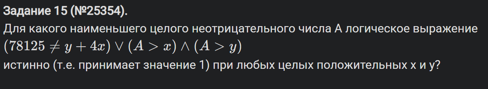
В чем проблема? Вот в этом условии: 78125 != y + 4x. Во-первых, в связи с ним надо перебирать А в диапазоне от 0 до 100_000 хотя бы. Во-вторых - х и у в диапазоне ну хотя бы 80_000. Т.е. это дает нам по итогу вот такой код:
def f(x,y,A):
return ((78125 != y + 4*x) or (A > x) and (A > y))
for A in range (1,100_000):
flag = True
for x in range (1,80_000):
for y in range (1,80_000):
if not(f(x,y,A)):
flag = False
if flag:
print(A)Так вот, проблема в числе перебора: 100_000 * 80_000 * 80_000. Это бля вот столько: 640 000 000 000 000. Это типа много окда. Даже на домашних компах будет долго считать, а на школьных и подавно. Поэтому нам надо как-то упростить этот перебор, чтобы компику было полегче. Предлагаю сделать так:
- Что-то одно т.е. либо x либо y придется изначально (т.е. в первом цикле) перебирать много раз. Много - это столько, сколько говорит само условие
78125 != y + 4x. Т.е. если речь о y - то 80_000 раз, а если x - то 20_000 раз, поскольку там у нас4xстоит. - Исходя из этого, будем перебирать х 20_000 раз. Но тогда нужно перебирать конкретные значения у. Найти их просто - выразить из нашего условия. Т.е.
y = 78125 - 4*xОднако в таком случае нам нужно поставить дополнительно условие, чтоy > 0, ведь там у нас вычитание происходит. - И вот только тогда писать наши обычные
if not (f (x,y,A)):иflag = False
Т.е., по итогу, все это выглядит так:
def f(x, y, A):
return ((78125 != y + 4*x) or (A > x) and (A > y))
for A in range(0, 100_000):
flag = True
for x in range (1, 20_000):
y = 78125 - 4*x
if y > 0:
if not (f (x,y,A)):
flag = False
break
if flag:
print(A)
exit()Ответ: 78122